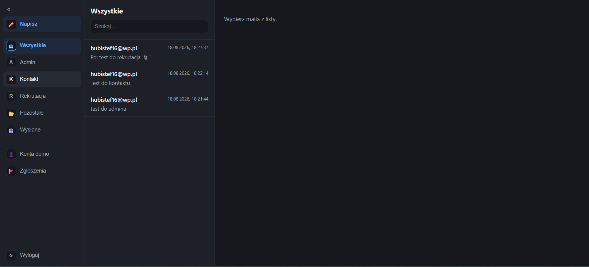
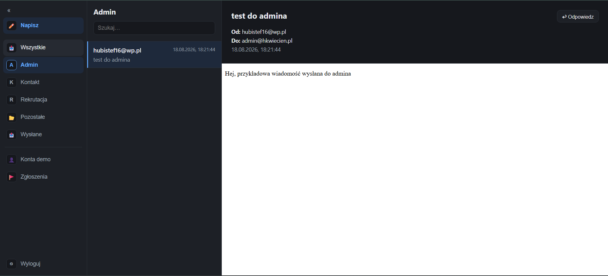
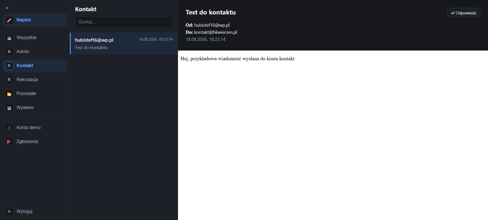
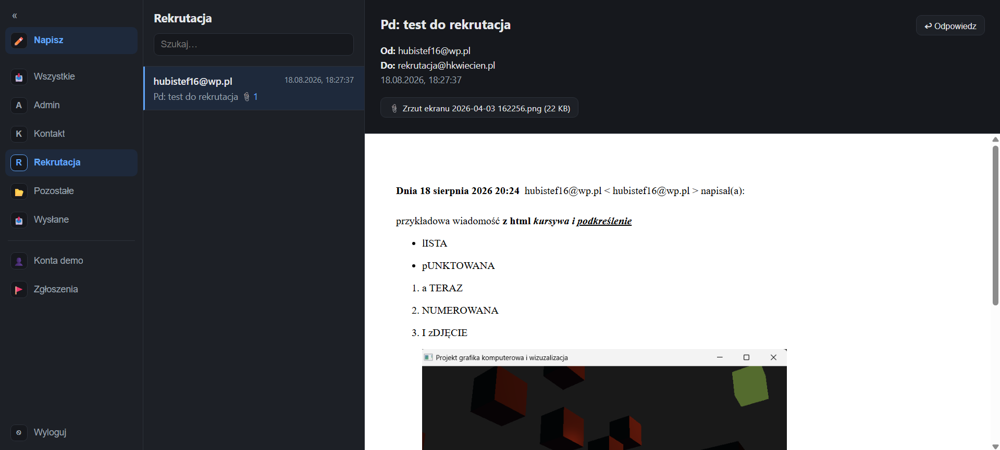

O projekcieOverview
Backend systemu pocztowego HK Mail — odpowiada za odbieranie i wysyłanie wiadomości, przechowywanie ich w bazie oraz udostępnianie danych klientowi przez API GraphQL. Obsługuje dwa rodzaje kont: administratora ze skrzynkami we własnej domenie oraz tymczasowe konta demo, tworzone na token i odizolowane od pozostałych danych.
The backend of the HK Mail system — it receives and sends messages, stores them in the database and exposes data to the client through a GraphQL API. It supports two kinds of accounts: an administrator with mailboxes on a private domain, and temporary demo accounts that are token-provisioned and isolated from other data.
Dlaczego nie ma linku „na żywo"? To czyste API — nie udostępnia żadnych danych publicznie i wymaga uwierzytelnienia. Działanie backendu najlepiej zobaczyć przez klienta HK Mail, który korzysta z tego API.
Why is there no “live” link? This is a pure API — it exposes no public data and requires authentication. The easiest way to see the backend in action is through the HK Mail client, which consumes this API.
Co zbudowałemWhat I built
- API GraphQL (Lighthouse) — schemat, zapytania i mutacje obsługujące skrzynki, wiadomości i kontakty klienta.
- GraphQL API (Lighthouse) — schema, queries and mutations serving the client's mailboxes, messages and contacts.
- Integracja z Resend — wysyłka wiadomości oraz odbiór poczty przychodzącej przez webhooki.
- Resend integration — sending messages and receiving inbound mail through webhooks.
- Przetwarzanie w tle — kolejkowe workery (kolejka w bazie danych) pobierające treść wiadomości i załączniki, dzięki czemu żądania nie blokują użytkownika.
- Background processing — queue workers (database-backed queue) fetching message bodies and attachments, so requests never block the user.
- Konta demo — tworzone na token, odseparowane od danych administratora, z harmonogramem (scheduler) automatycznie usuwającym wygasłe konta.
- Demo accounts — token-provisioned, isolated from admin data, with a scheduler automatically removing expired accounts.
- Uwierzytelnianie i role — rozdzielenie uprawnień administratora i kont demo oraz konfiguracja CORS pod osobno hostowany frontend.
- Authentication and roles — separating administrator and demo permissions, plus CORS configuration for the separately hosted frontend.
Stack technologicznyTech stack
Backend: PHP 8.3, Laravel · API: GraphQL (Lighthouse) · Baza: PostgreSQL · Poczta: Resend (SMTP + webhooki) · Asynchroniczność: kolejki i scheduler Laravela · Wdrożenie: Linux, Nginx.
Backend: PHP 8.3, Laravel · API: GraphQL (Lighthouse) · Database: PostgreSQL · Mail: Resend (SMTP + webhooks) · Async: Laravel queues and scheduler · Deployment: Linux, Nginx.
API w działaniuThe API in action
Poniższe zrzuty pochodzą z klienta HK Mail — pokazują dane serwowane przez to API: pocztę odebraną przez webhooki, podział na skrzynki oraz obsługę załączników i treści HTML.
The screenshots below come from the HK Mail client — they show the data served by this API: mail received through webhooks, the split into mailboxes, and handling of attachments and HTML content.


admin@) — API rozdziela pocztę przychodzącą na właściwe konta.Separate mailboxes for addresses on a private domain (admin@) — the API routes inbound mail to the right accounts.
kontakt@ z podglądem wiadomości — treść pobierana asynchronicznie przez workera kolejki.The kontakt@ mailbox with a message preview — the body is fetched asynchronously by a queue worker.
Czego się nauczyłemWhat I learned
Projektowanie API schema-first w GraphQL zamiast REST, obsługa poczty przychodzącej przez webhooki zewnętrznego dostawcy oraz przenoszenie wolnych operacji (pobieranie treści i załączników) do kolejek. Sporo dało też odseparowanie kont demo od danych administratora — czyli projektowanie pod izolację danych i automatyczne wygasanie.
Designing a schema-first GraphQL API instead of REST, handling inbound mail through a third-party provider's webhooks, and moving slow operations (fetching bodies and attachments) into queues. Isolating demo accounts from admin data was equally instructive — designing for data isolation and automatic expiry.